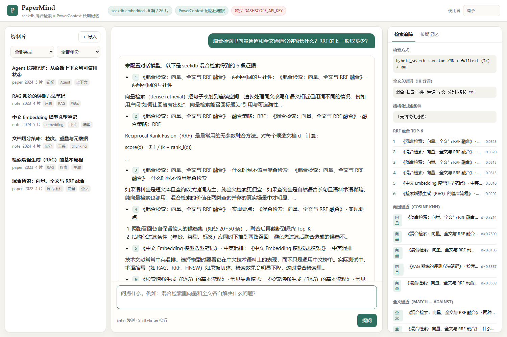
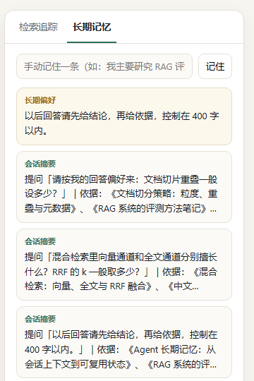

搜不到
关键词搜不到同义改写；纯向量又对术语、型号和编号不敏感。中文技术资料里，两边的短板都很具体。
Qoder × OceanBase 比赛作品/学习与科研提效
PaperMind 是一个文献与笔记研读助手。提问时，seekdb 同时做向量与中文全文检索， 用 RRF 融出一份可核对的证据；PowerContext 记住你的回答偏好与已确认结论， 下一次提问不必从头解释。答案里的 [n] 能回到原文那一段。
无需 API Key 也能跑通检索与记忆；配置 DashScope 后由 qwen-plus 生成成文答案。

The gap
读研、做项目、长期跟踪一个方向的人，常在同三个地方卡住。
关键词搜不到同义改写；纯向量又对术语、型号和编号不敏感。中文技术资料里，两边的短板都很具体。
回答偏好、研究范围、已经确认的结论分散在不同会话里。每开一次新对话，就要重新交代一次自己。
没有出处的答案，在科研里等于没有答案。话说得再顺，也要能回到原文那一段核对。
所以 PaperMind 只做两件事：让证据找得到，让上下文留得下。
The engines
两者在同一次提问里各司其职。不是“装了但没用”，而是链路里各有不可替代的一段。
向量与全文，在同一个数据库里融合。
hybrid_search 在库内完成 RRF 融合。输出Top-6 证据片段，附每一路各自的候选与距离。
把“你这个人怎么读资料”留下来。
prepare 打包，预算 3000 字节。输出一段带信任边界的长期上下文，而不是整段聊天记录。
One question
从输入框到带引用的回答，中间没有黑盒：关键词、候选、融合名次、注入的上下文都可以在界面上看到。
用 jieba 从问题里抽出不超过 8 个关键词，同时读取资料类型与年份过滤条件。关键词既用于全文通道，也用于记忆检索。
app/retrieval.py
seekdb 在同一批切片上执行向量 KNN 与全文 MATCH ... AGAINST，两路各保留 24 个候选。向量擅长同义改写，IK 全文保住术语与编号。
app/store.py:223
只使用名次，不混用余弦距离和全文分数；k = 60，融合后取 Top-6。融合分只用于排序，界面展示的也是排名而非“像不像”。
app/store.py:234
先按 kind 列出 active 偏好（每轮生效，不依赖本轮是否命中关键词），再合并命中的记忆与 prepare 返回的上下文，按 3000 字节控制预算。
app/service.py:132
提示词限定“只依据片段”，每个论断标注 [n]；本轮摘要写回工作记忆，检测到「以后 / 请始终」等表达时，额外写入一条偏好。
app/llm.py · app/service.py:148
fused = chunks.hybrid_search(
query={"where_document": {"$contains": keywords},
"n_results": 24},
knn={"query_texts": [question], "n_results": 24},
rank={"rrf": {"rank_window_size": 60,
"rank_constant": 60}},
n_results=6,
)preferences = pc.preferences(scope_id) # active 偏好
prepared = pc.prepare(scope_id, keywords,
max_bytes=3000)
context = _render_memory(preferences, prepared,
hits)
answer = llm.answer(question, citations, context)以上为实际调用（省略了锁与 where 过滤的细节）。RRF 的 rank_constant 就是文档里的 k。
Evidence
下面是真实运行截图与验证日志。截图使用零凭据模式，所以检索与记忆的中间结果全部可见。
hybrid_search · vector KNN + fulltext (IK) + RRF，一行写清本轮走了什么；下方是 IK 分词后的关键词。scripts/verify_demo.py
| 检查 | 实际观察 | 结果 |
|---|---|---|
| seekdb 已建立索引 | 6 篇 / 26 片，collection = chunks_local | PASS |
| 混合检索返回引用 | 6 条引用，均带 doc_id 与 section | PASS |
| 向量通道有命中 | 距离 0.72 – 0.87 | PASS |
| 全文通道有命中 | IK 命中「混合 / 检索 / 融合」 | PASS |
| PowerContext 可用 | /health/live 返回 200 | PASS |
| 偏好被写入记忆 | 写入 preference：「…控制在 400 字以内」 | PASS |
| 后续提问复用偏好 | memory_context 首段为【用户长期偏好】 | PASS |
完整日志（含 RRF 分数、两路候选与注入内容）见仓库 docs/verification-log.txt；运行方式见 docs/RUNBOOK.md。

第三轮提问时，模型实际收到的上下文开头是这样的——不是界面上的一句提示，而是真正进入提示词的内容：
【用户长期偏好】
- 以后回答请先给结论，再给依据，控制在 400 字以内。代码先按 kind=preference 列出 active 记忆，再与关键词命中的结论合并，因此偏好不依赖本轮提问是否恰好命中相关词。同一轮里，记忆命中 1 条、回写 1 条，都能在界面上核对。
摘录自 docs/verification-log.txt 第 5 节「新问题的记忆复用」。
上面的日志在零凭据模式下生成：本地 384 维哈希向量 + 证据清单回答，因此能看到全部中间结果。
填入 DashScope Key 后，同一链路改用 text-embedding-v3（1024 维）与 qwen-plus 生成成文答案，
引用与记忆机制不变；两种模式的集合分开命名，避免维度冲突。
Run it
推荐 WSL2 / Linux。嵌入式 seekdb 不支持 Windows 原生运行；完整步骤、Docker 方案与排错见仓库运行说明。
# 1. 安装 PowerContext 1.4.1
uv tool install --force "powercontext[cli,server]==1.4.1"
# 2. 配置（只放在本地，.env 已 gitignore）
cp .env.example .env
cp config/powercontext.env.example config/powercontext.env
# 3. 安装应用
uv venv && uv pip install -e .
# 4. 起记忆服务（终端 A），导入示例资料（终端 B）
powercontext server run --env-file config/powercontext.env
python -m scripts.seed
# 5. 起应用并自动验证
uvicorn app.main:app --host 127.0.0.1 --port 8080
python -m scripts.verify_demoLimits
比赛作品最容易被夸大的部分，恰恰是评审最该核对的部分。
示例语料 6 篇 / 26 片，单机嵌入式 seekdb。更大规模应切到 seekdb Server，并重做切片与检索评测。
零凭据模式的 384 维哈希向量只保证链路可演示，语义能力有限；真实效果依赖 text-embedding-v3 与领域语料。
PowerContext 文本检索是词项匹配（多词为 AND 语义）。所以偏好改为按 kind 全量注入，结论类记忆仍依赖关键词命中。
嵌入式 seekdb 仅支持 Linux / macOS；Windows 需要 WSL2 或 Docker。没有配置对话模型时，只输出证据清单，不会假装作答。
接入 rerank 与引用级评测；把记忆写入的去重做成可审查的合并流程；支持按课题隔离的多资料库。